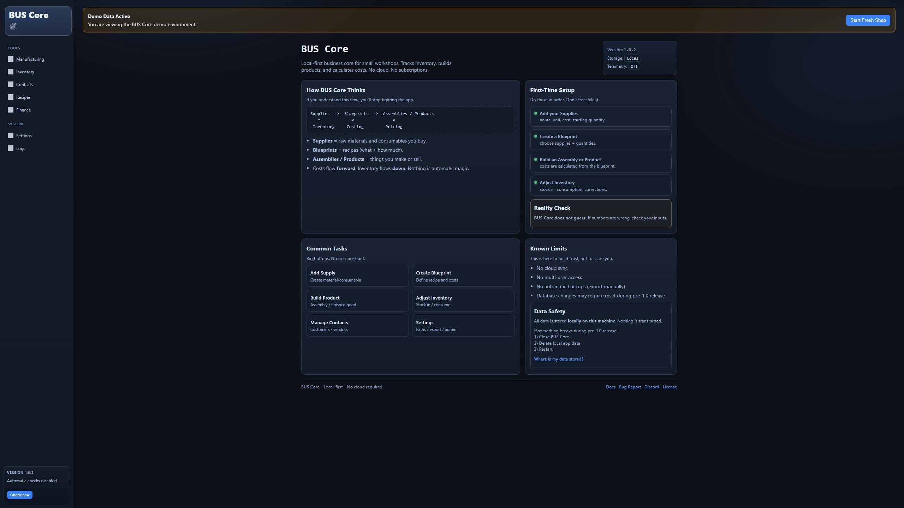
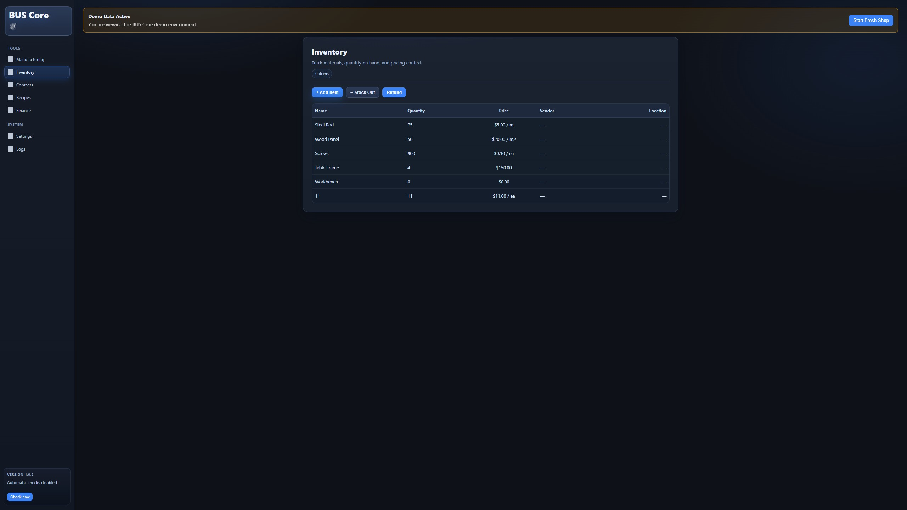
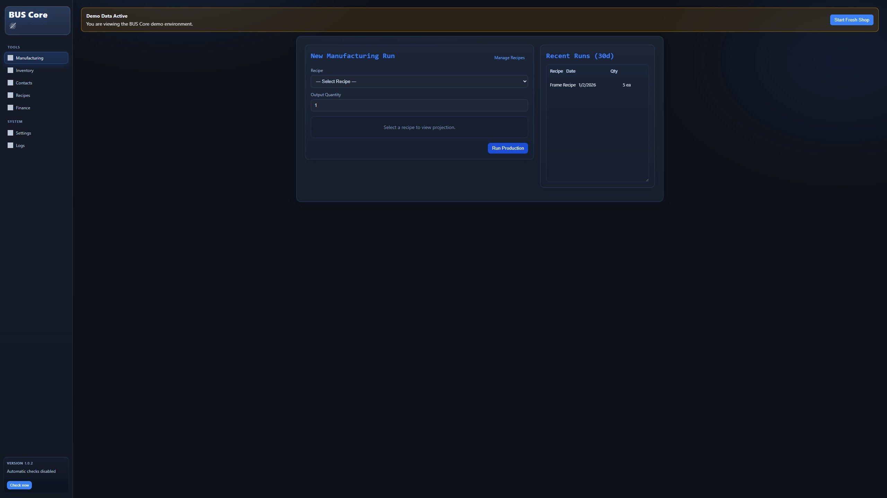
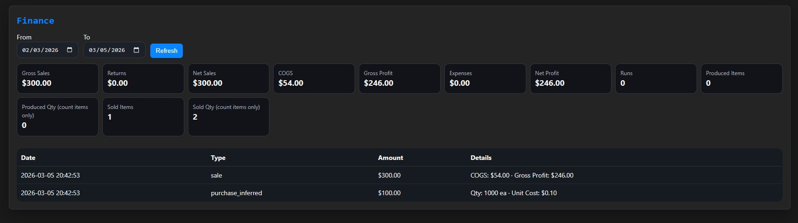
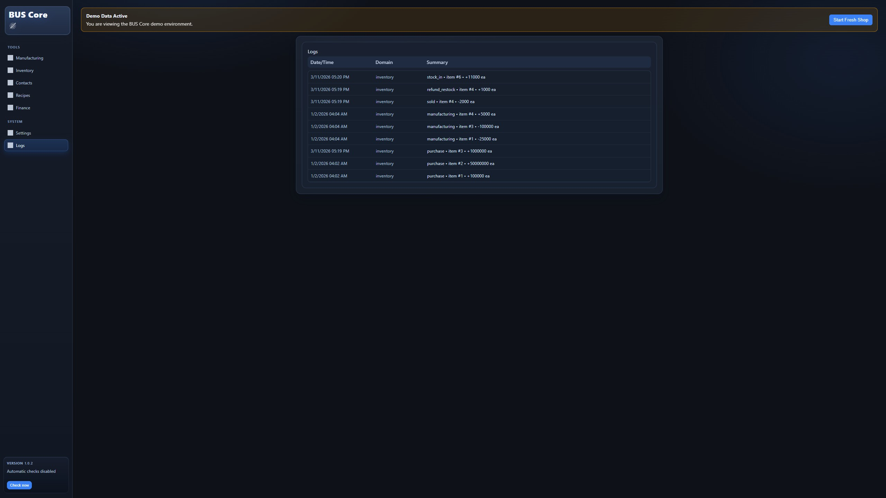

Inventory Control
Track raw materials and product stock in a structured system.
Local-first production tracking for small manufacturing shops.

Most small manufacturing shops run production on:
This works until the operation grows slightly.
Then problems emerge:
BUS Core replaces that chaos with a structured workflow.
BUS Core works well for:
If you build real products in small batches, BUS Core is designed for your workflow.
A jig ensures consistent production on a machine.
BUS Core ensures consistent production workflows.
Instead of relying on memory or scattered notes, the system enforces a structured production process.
Materials
Blueprint
Manufacturing Run
Inventory Movement
Cost Calculation
Production Ledger
Track raw materials and product stock in a structured system.
Define how materials become products using repeatable recipes.
Record what was produced and which materials were consumed.
Understand the actual cost of each batch and product.
Maintain a complete history of inventory movement and manufacturing activity.
BUS Core
|- Local Database
|- Inventory Engine
|- Manufacturing Engine
|- Finance / Cost Engine
\- Web Interface



Example access:
http://localhost:8765
Optional Docker command:
docker run buscore
Small manufacturing shops often fall between two extremes.
Spreadsheets are too fragile.
ERP systems are too complex and expensive.
BUS Core exists to fill that gap with a practical, local-first operational tool.
Get the latest BUS Core release and start running it locally on your machine.
Review the local-first architecture, no telemetry approach, and data ownership model.
Follow release history and technical progress to see what is changing over time.
Read practical writing on manufacturing workflows, spreadsheets, and the gap before ERP.
This post explains what breaks first in spreadsheet-based operations and why a local-first system becomes necessary.
This post maps the operational gap between fragile spreadsheets and oversized ERP tools for small shops.
This post focuses on why real adoption signals matter more than vanity metrics for practical infrastructure software.
Track substrates, record production runs, and calculate real per-unit cost for engraving operations.
Manage filament and resin inventory across multiple printers and know what each print actually costs.
Define repeatable blueprints, track raw materials through production, and maintain a structured ledger.